数据概览
数据概览 + 目标变量分布Shape
569 x 28
27 个特征 + target
缺失值
0
无需缺失填补
恶性（0）
37.3%
212 条样本
良性（1）
62.7%
357 条样本
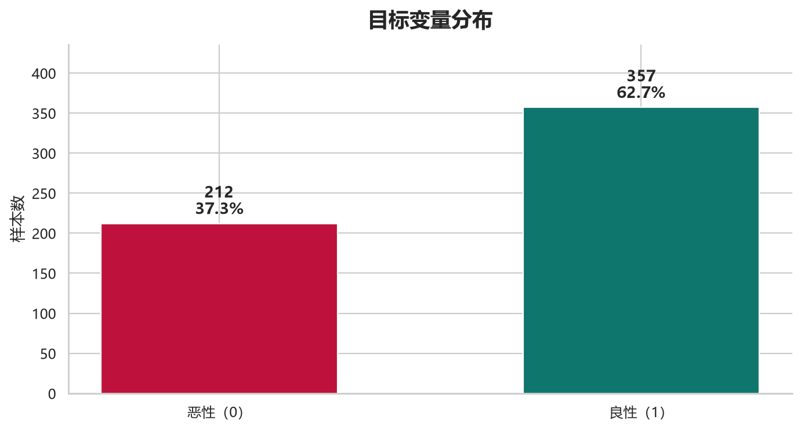
标签相关性与分组均值
Top-10 相关特征 + 恶性/良性均值差异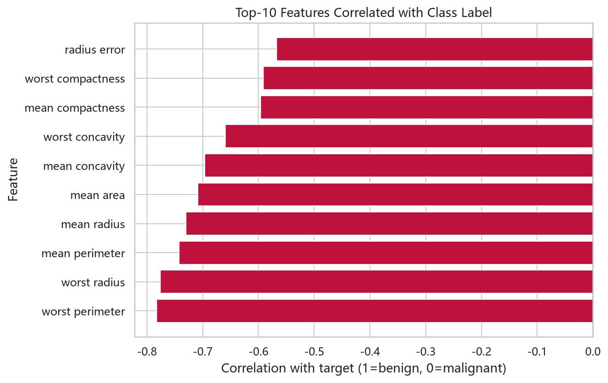
| 特征 | 恶性（0）均值 | 良性（1）均值 | 绝对差异 |
|---|---|---|---|
| mean area | 978.38 | 462.79 | 515.59 |
| worst perimeter | 141.37 | 87.01 | 54.36 |
| area error | 72.67 | 21.14 | 51.54 |
| mean perimeter | 115.37 | 78.08 | 37.29 |
| worst radius | 21.13 | 13.38 | 7.76 |
| worst texture | 29.32 | 23.52 | 5.80 |
关键特征分布
按恶性（0）/良性（1）分组的小提琴图 / 箱线图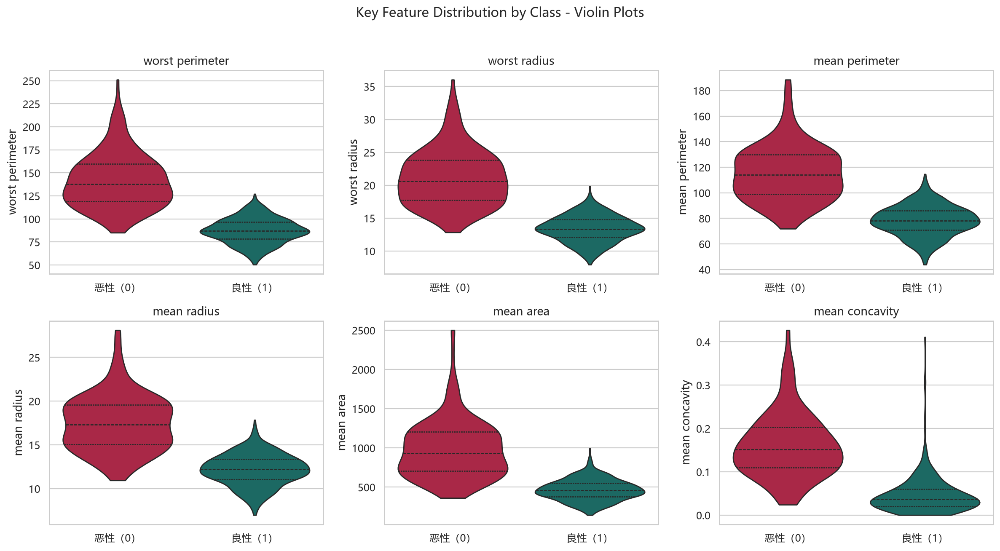
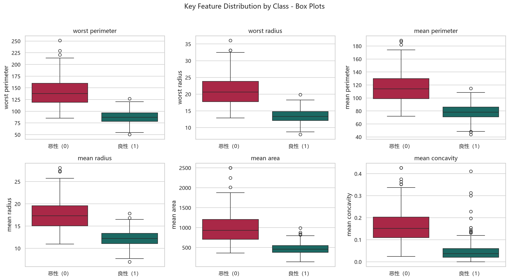
相关性热力图
27 个数值特征相关系数矩阵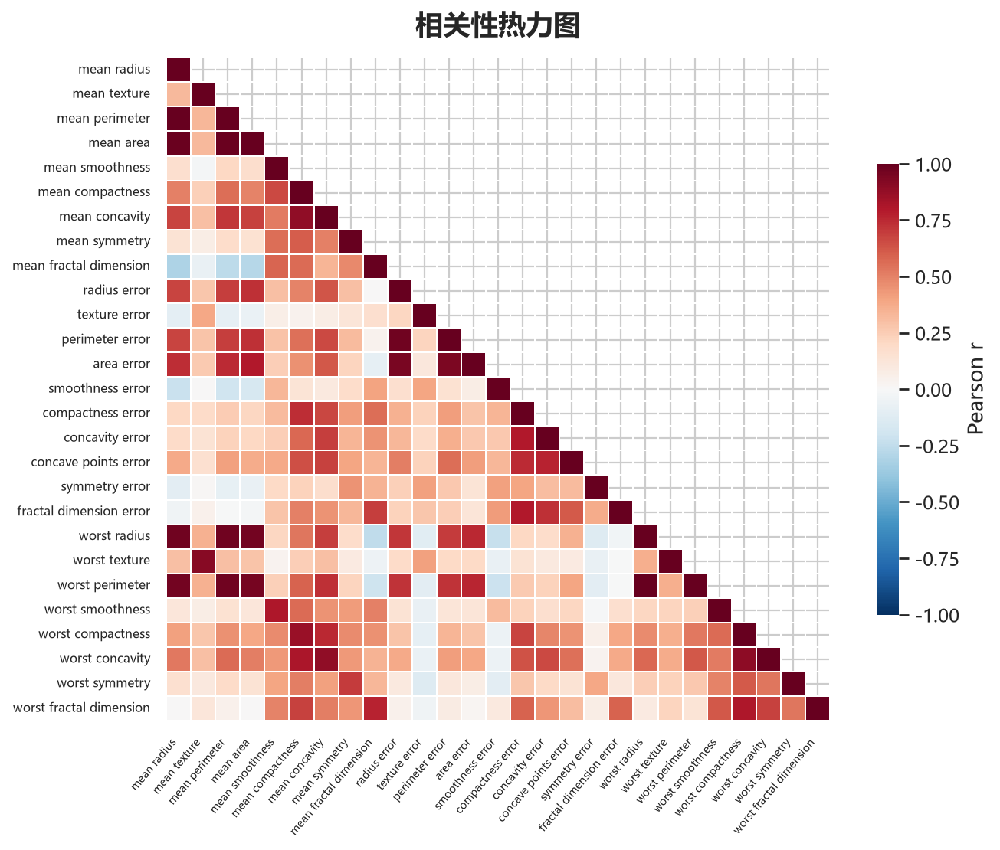
模型表现总览
测试集指标，按恶性 ROC-AUC 排序最高 ROC-AUC（恶性）
0.9954
Logistic Regression
最高 Accuracy
98.25%
SVM
最高 Recall（恶性）
97.62%
Logistic / SVM
高 VIF 特征
19
VIF > 10
| 模型 | Accuracy | Precision（恶性） | Recall（恶性） | F1（恶性） | ROC-AUC（恶性） |
|---|---|---|---|---|---|
| Logistic Regression | 0.9737 | 0.9535 | 0.9762 | 0.9647 | 0.9954 |
| SVM | 0.9825 | 0.9762 | 0.9762 | 0.9762 | 0.9950 |
| XGBoost | 0.9474 | 0.9500 | 0.9048 | 0.9268 | 0.9917 |
| Random Forest | 0.9474 | 0.9286 | 0.9286 | 0.9286 | 0.9911 |
AUC 排名
越接近 1，区分能力越强混淆矩阵结果
4 个基线模型 + 调优模型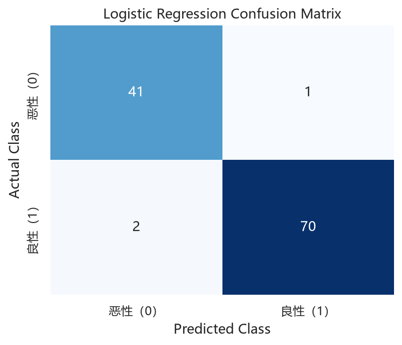
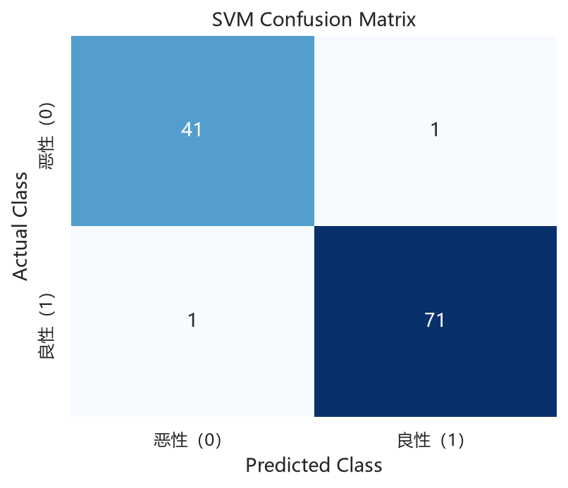
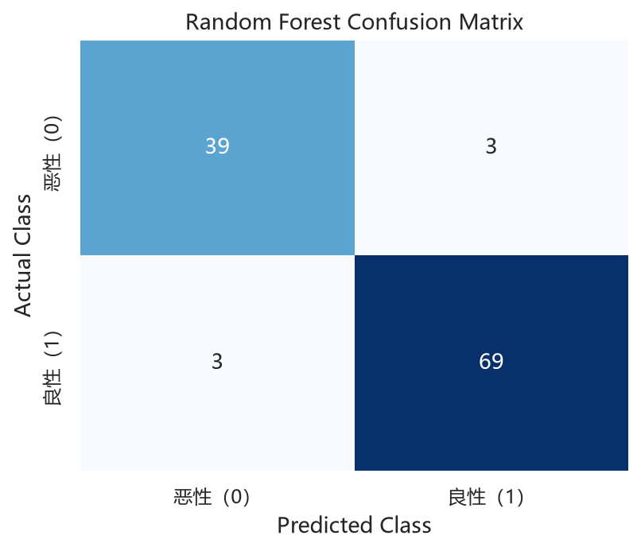
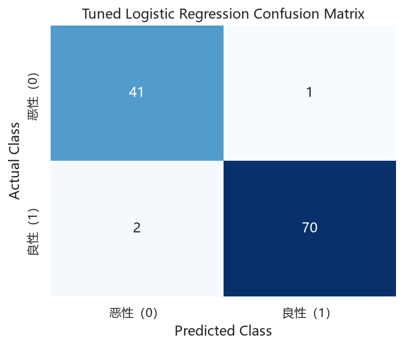
ROC 曲线对比
4 条模型曲线 + 随机基准线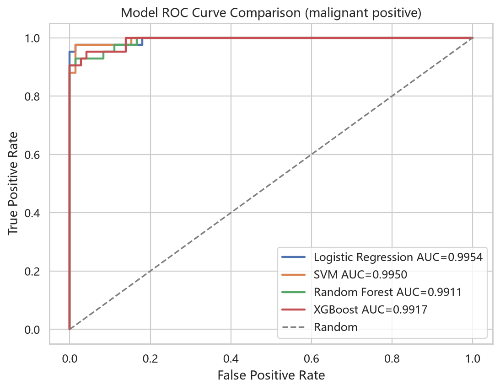
模型解释性图表
来自 Notebook 执行结果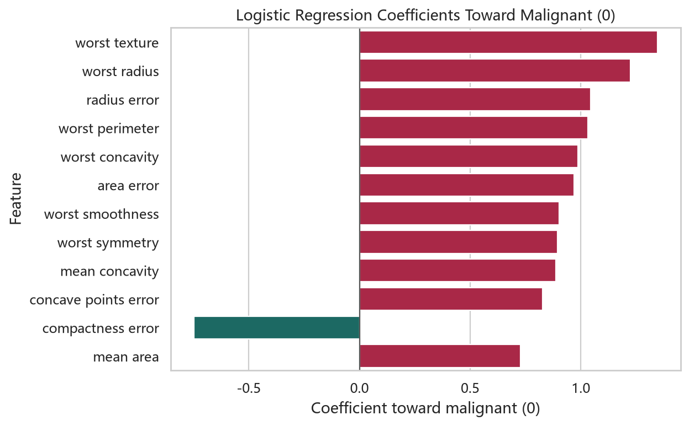
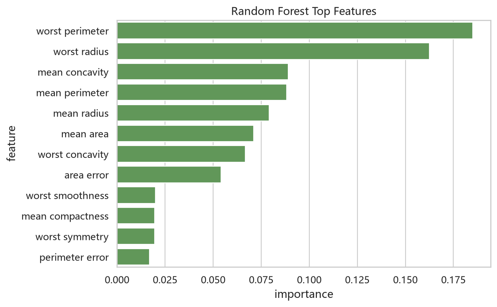
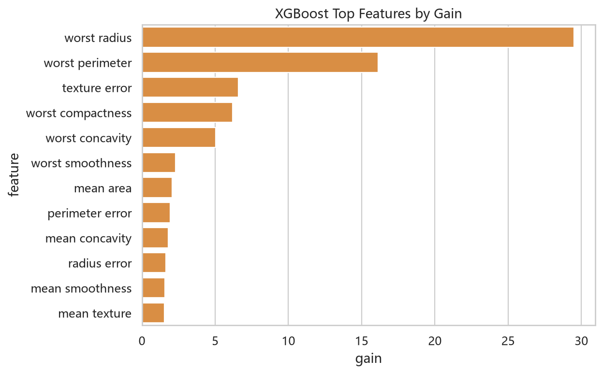
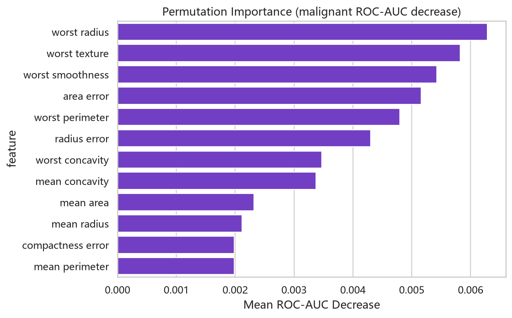
共线性与调优
VIF 与最终模型VIF Top 6
| 特征 | VIF |
|---|---|
| mean perimeter | 3863.37 |
| mean radius | 3498.44 |
| worst radius | 364.89 |
| worst perimeter | 347.85 |
| mean area | 133.08 |
| perimeter error | 65.72 |
调优结论
- 最佳模型：Logistic Regression。
- 最佳交叉验证 AUC：0.9953。
- 最佳参数：C=1，penalty=L2。
- 调优后测试集 ROC-AUC：0.9954，与基线基本一致。
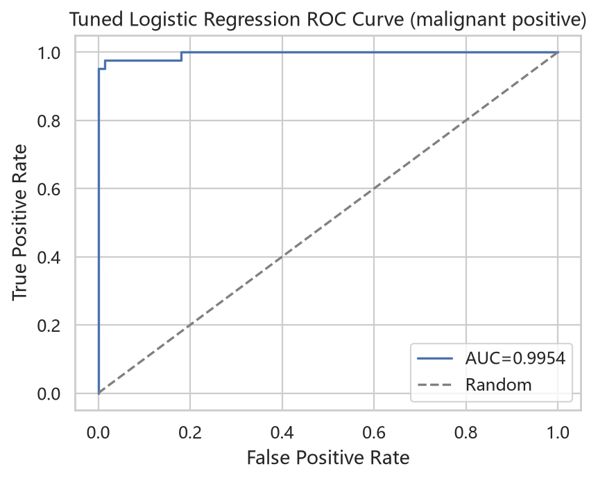
XGBoost 学习曲线
xgb.cv 训练/测试 error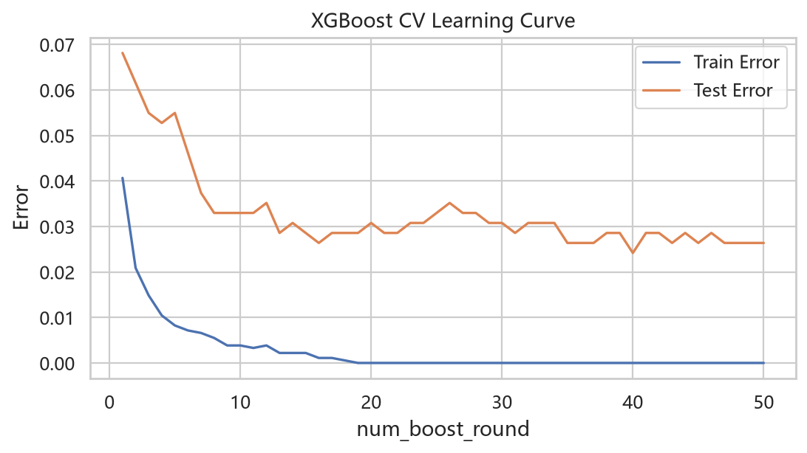
核心结论
用于课程展示的摘要- Logistic Regression 作为线性基线已经取得最高 AUC，说明该数据集的判别边界对线性模型非常友好。
- SVM 的 Accuracy、Recall 和 F1 略高，适合作为追求整体分类正确率和召回率时的候选模型。
- Random Forest 与 XGBoost 均表现稳定，但在本次测试集上没有超过线性模型。
- 模型解释性结果反复指向 worst radius、worst perimeter、worst texture、mean concavity 等特征。